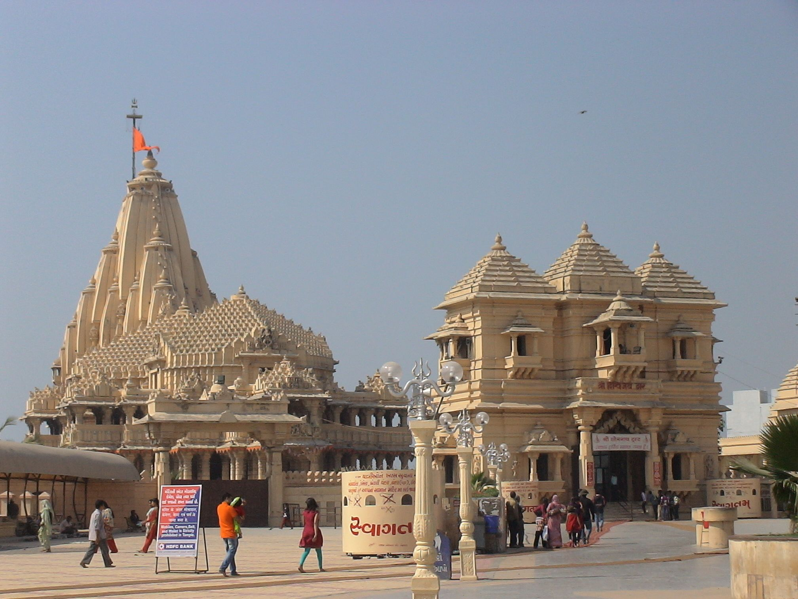
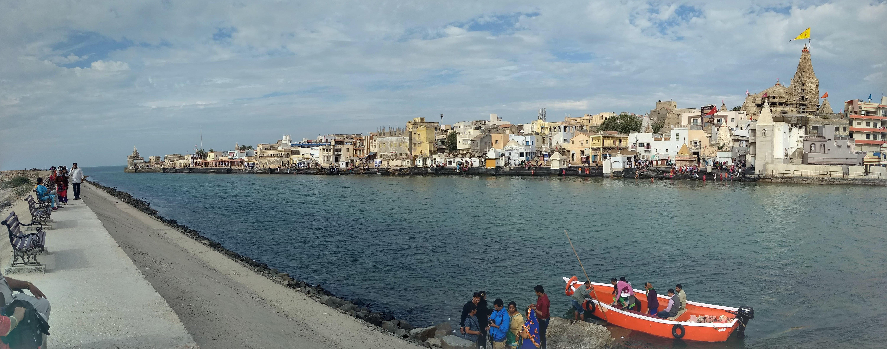
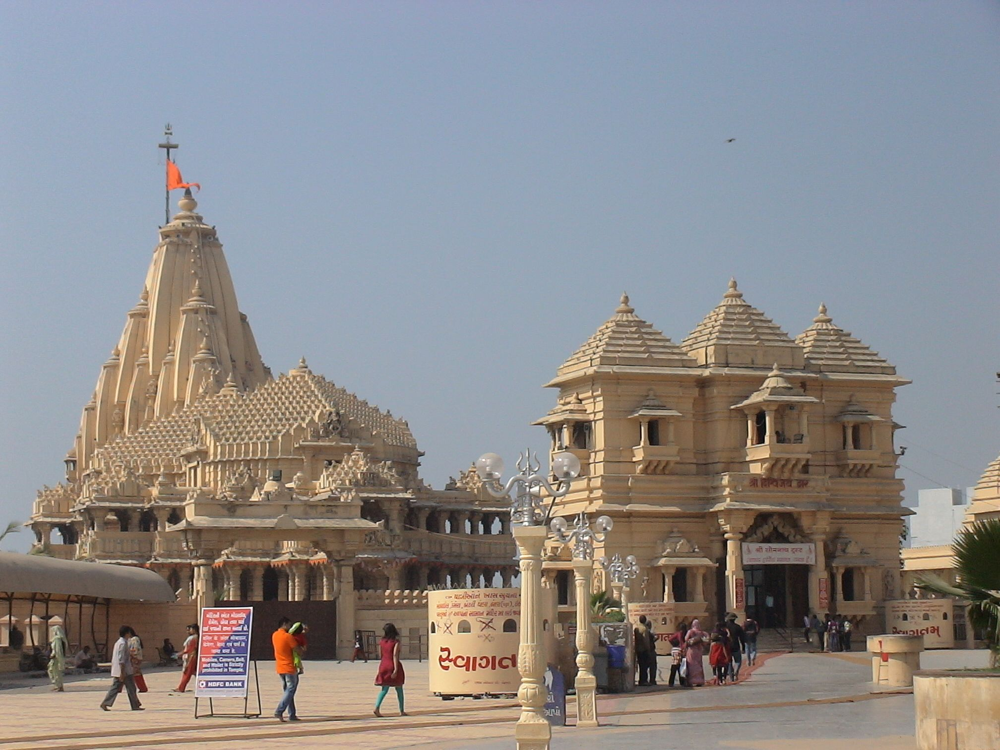
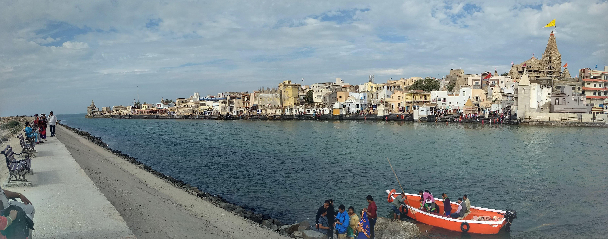

Salvation Quest
Salvation Quest
Dwarka
A Quest for Moksh

 



About
Dwarka is believed to have been the first capital of Gujarat. The city's name literally means the "gateway to heaven" in Sanskrit, as Dwar means "gate" and ka references "Brahma". Dwarka has also been referred to throughout its history as "Mokshapuri", "Dwarkamati", and "Dwarkavati". It is mentioned in the ancient prehistoric epic period of the Mahabharata. According to legend, Krishna settled here after he defeated and killed his uncle Kansa at Mathura. This mythological account of Krishna's migration to Dwarka from Mathura is closely associated with the culture of Gujarat. Krishna is also said to have reclaimed 12 yojanas or 96 square kilometres (37 sq mi) of land from the sea to create Dwarka. Dwarka was established as the capital in Saurashtra by the Aryans during the Puranaic.[citation needed] The Yadavas, who had migrated from Mathura, established their kingdom here when the city was known as "Kaushathali". It was during this period that the city underwent rebuilding and was named Dwarka. A friendly population of natives also prompted Krishna to settle at Dwarka when he decided, after fighting Jarasandha, the king of Magadh, to retreat from Mathura. The kingdom, also known as the Yaduvanshi empire, was established by Uugrasena, father of Kansa the then ruler and later Krishna flourished and extended its domain. It is said that Krishna conducted the administration of his kingdom from Dwarka while residing with his family in Bet Dwarka. The city's Dwarkadhish Temple dedicated to Krishna was originally built around 2,500 years ago, but was destroyed by Mahmud Begada rulers and subsequently rebuilt in the 16th century. The temple is also the location of Dwaraka maţha, also called Sharada Matha/Peeth and "western peeth", one of the four peeths (Sanskrit: "religious center") established by Adi Shankaracharya. As an important pilgrimage centre for Hindus, Dwarka has several notable temples, including Rukmini Devi Temple, Gomti Ghat, and Bet Dwarka. There is also a lighthouse at the land end point of Dwarka.
History
In 200 AD, King Vasudev II of Dwarka was defeated by Mahakshatriya Rudradama. Upon the death of Rudradama, his wife, Queen Dheeradevi, invited his brother Pulumavi, seeking guidance to rule. Rudradama had embraced the Vaishnava religion and worshipped Krishna at Dwarka. Vajranabha, his successor, built a chhattri (an umbrella type monument) and deified an idol of Krishna in it. An epigraphic reference ascribed to Garulaka Simhaditya, the son of Varahdas, the king of Dwarka, is inscribed on a copper plate dated to 574 AD, found in Palitana. The Greek writer of the Periplus of the Erythraean Sea referred to a place called Baraca, which has been interpreted as present-day Dwarka. A reference made in Ptolemy's Geography identified Barake as an island in the Gulf of Kanthils, which has also been inferred to mean Dwarka. One of the four dhams (religious seats), which were founded by Adi Shankaracharya (686–717 AD) at the four corners of the country, was established as a monastic centre at a time when mainstream Hinduism had still not been accepted; it forms part of the Dwarka temple complex.In 885 AD, the temple was renovated by Nrushinhaashrma, head of the Shankaracharya pitha (centre).
Temple
Considered a holy city, Dwarka is a well known for its temples and as a pilgrimage centre for Hindus. The Dwarakadhisa Temple, also called Jagat Mandir, located in the heart of Dwarka, is a Vaishnava temple. It was built by Raja Jagat Singh Rathore, hence it is called Jagat Mandir. The temple, facing west, is at an elevation of 12.19 metres (40.0 ft) above mean sea-level. It is conjectured that this temple location is 2,500 years old and is where Krishna built his city and a temple. However, the existing temple is dated to the 16th century). It is a five-storied edifice built over 72 pillars (a sandstone temple with 60 pillars is also mentioned). The temple spire rises to a height of 78 metres (256 ft), and a very large flag with symbols of the sun and moon is hoisted on it. The temple layout consists of a garbhagriha (Nijamandira or Harigraha) and an antarala (an antechamber). The main deity deified in the sanctum is of Dwarkadeesh, which is known as the Trivikrama form of Vishnu and is depicted with four arms. The Dwarakadhisa Temple is also the location of Dvaraka Pitha, also called Sharada Matha/Peeth and "western peeth"), one of the four peeths (Sanskrit: "religious center") established by Adi Shankaracharya.
TRAVEL
Jamnagar airport, at a distance of nearly 45 kilometers is the nearest airport to Dwarka. Dwarka railway station is a small railway station in Devbhoomi Dwarka district, Gujarat. It serves Dwarka city. The station consists of 2 platforms.
STAY
Since there are number of places to stay in Dwarka although choice can be made on the basis of tour : whether to have a travel package or going on with private staying desinations.